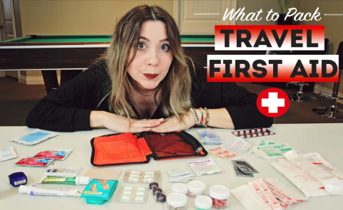

MAY 22, 2016
What To Pack: Travel First Aid Kit
As an experienced traveller I’ve learnt the importance of carrying around a full first aid kit with me when I travel. Even more so if I am traveling solo. This is because THINGS HAPPEN, accidents happen, scraps, bruises, burns, food poisoning, headaches, and sore feet. These things are all apart of travel and they can ruin your day, or week if you are not prepared. So I like to be prepared, and this is what I pack:

Travel First Aid Kit Packing List
- Antiseptic Gel– Polysporin
- Mosquito/Bug Relief– AfterBite
- Antacids– Gaviscon/Tums
- Rubbing Alcohol
- Medical Tape
- Blister Pads– Polysporin
- Mole Skin
- Antidiarrhoeals
- Cold/Flu Medication– Cold FX
- Throat Lozenges– Strepsils
- Alcohol Wipes
- Oral Electrolyte/ Rehydration Tablets – Dioralyte
- Bandaids
- Ibuprofen – Advil
- Iron Pills
- Motion Sickness Pills (if you get motion sick)
- Antihistamines/Allergy Medication – Benadryl
- Constipation Relief /Senna Tablets
- Digestive Enzymes – Beano
- Acetaminophen- Tylenol
- Iodine Ointment
- Lactaid (if lactose intolerant)
- Heavy Duty Bandages– Tergaderm
- Waterproof Bandage– Bandaid
- Maleria Tablets – (depending on location traveling to) Malarone
- Different Size Gauze Pads
- Burn Pad- 2nd Skin
- Tweezers
- Emergency Survival Blanket
- Sewing Kit
- Emergency Flash Light